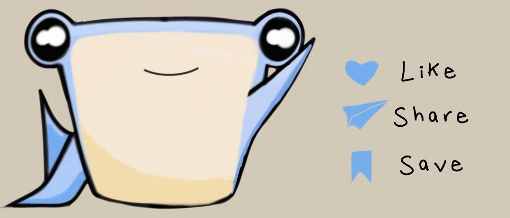
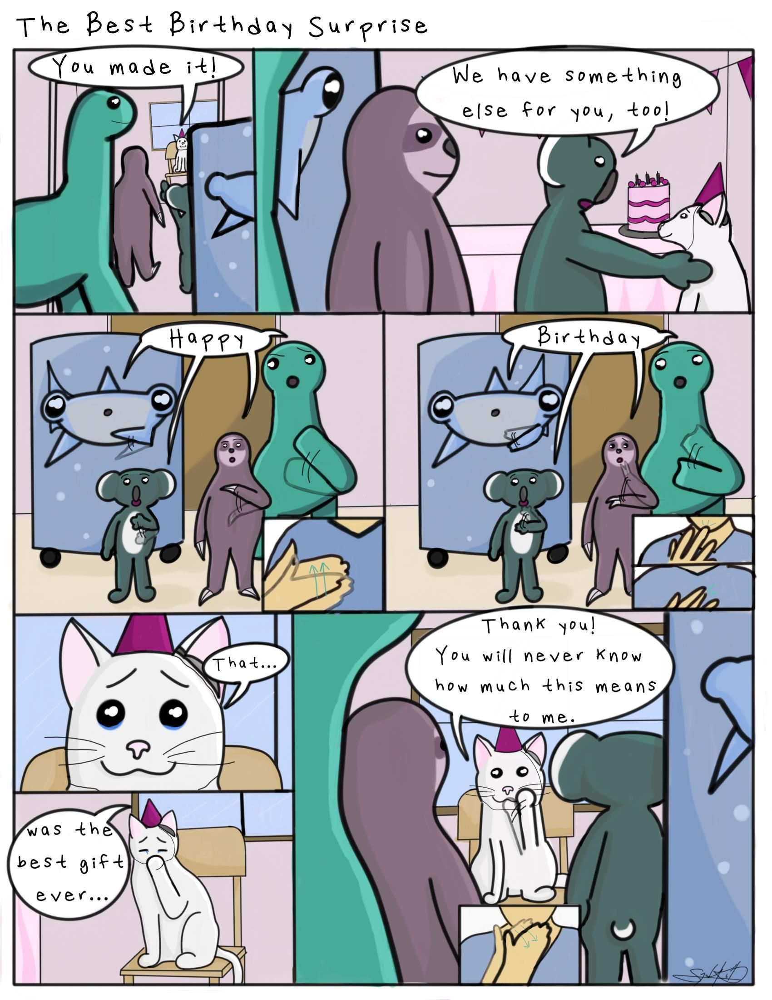
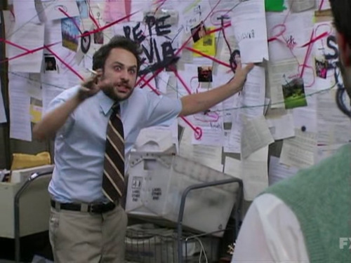

Comics And Movies: Nothing Wrong With That!
Week Seven
March 1, 2021-March 7, 2021
Before we get started, welcome to my rant. If you choose not to read everything, I'll skip to the end: I need your opinions on where my comic should go. Please fill out this 30 second form:
Onto the ranting!
I have been working on creating this webcomic series called "Love, Me". It is a collection of advice from my friends and family showed in the daily lives of animals. It started off with this short comic:

Now, I have 6 completed with this being my latest one (pre-critique and final edits):
I feel really proud of them and want to show everyone but I don't know how. I never thought that this series would be what it is now. I never thought I would be thinking about how awesome it would look on paper, yet here I am.
I get likes from the same 20 or so people that regularly do (thank you times a million to those people) but I want more people to see them. I know that this might sound selfish but I really am just proud of what I am working on.
So, this week has been filled with comics and movies.
Why movies you might ask?
Becuase my partner and I are crazy and decided that we wanted to watch one movie a day for the entire 2021 year. We've been quite successful in watching 65 movies so far. (Today being the 66th day and we have yet to watch it.)
You think I am joking? Here is proof:
I will go into detail of the movies in a later post, but if anyone were to ask me what I did this past week all I can think of are comics and movies.
WandaVision is included in the comics and movies week but I am to far into theories that if I talk about it here and anyone were to ask my in person it would be at least a two hour conversation. 
Return to Blog List, Internet Art main page , Collections, Home.